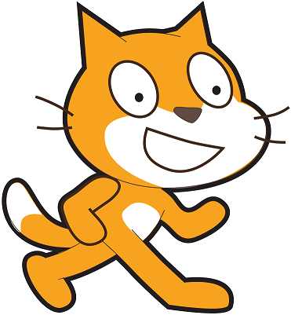
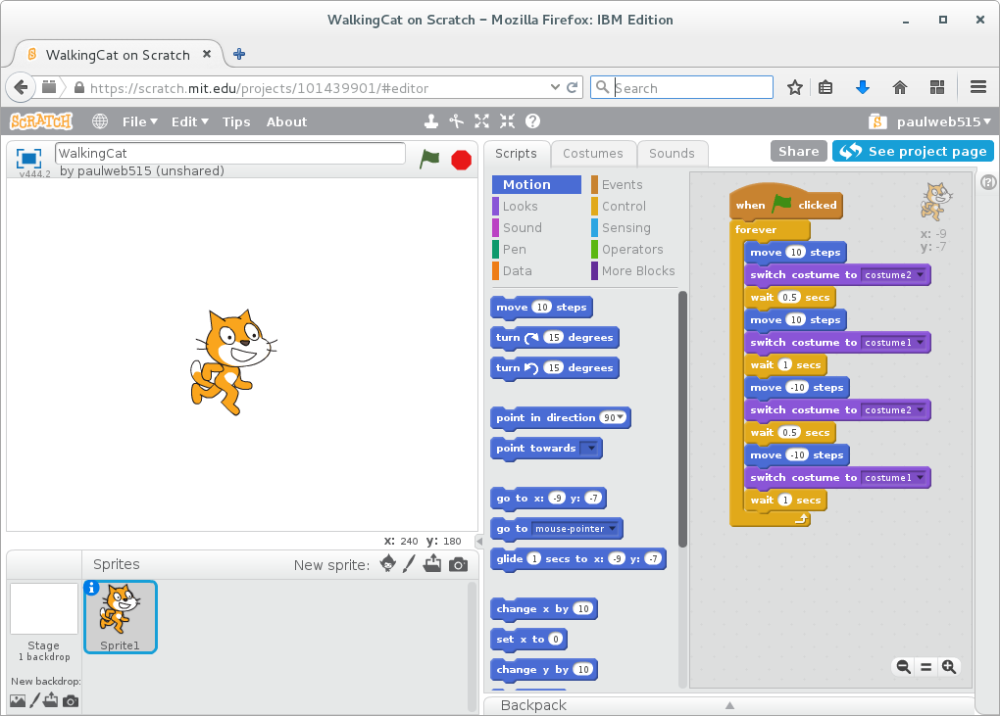

 Welcome
This website was created in partial fulfillment of the requirements for completing the TWR2012 Web-based Documentation course as part of the Technical Writer program at Algonquin College. The subject matter is excerpted from a chapter in my Scratch User Manual (an assignment from TWR2004 Technical Writing II). I wrote the user manual to help children learn how to program with Scratch, a free online visual programming language. My target audience is children aged 8 to 16 with basic computer skills, who may or may not be familiar with programming.
Getting started with Scratch
Scratch is a visual programming language. To create software programs in Scratch, you connect coloured blocks of code together (like puzzle pieces) to make scripts that tell the computer what to do. This makes Scratch programming quicker to learn than older programming languages because you don’t need to type long sets of instructions to tell a computer what to do.
To access Scratch, go to http://scratch.mit.edu. You will need to create an account as described on the website in order to register and log in.
Looking at the Scratch user interface
The Scratch user interface is shown in Figure 1. The different areas of the user interface are labeled to help you get to know their names and locations.

Figure 1: Scratch user interface
Let's get started with Designing Sprites in Scratch.